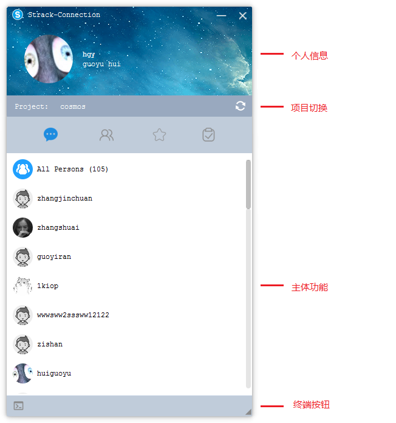
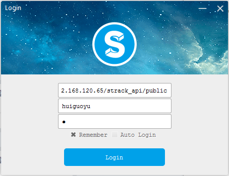
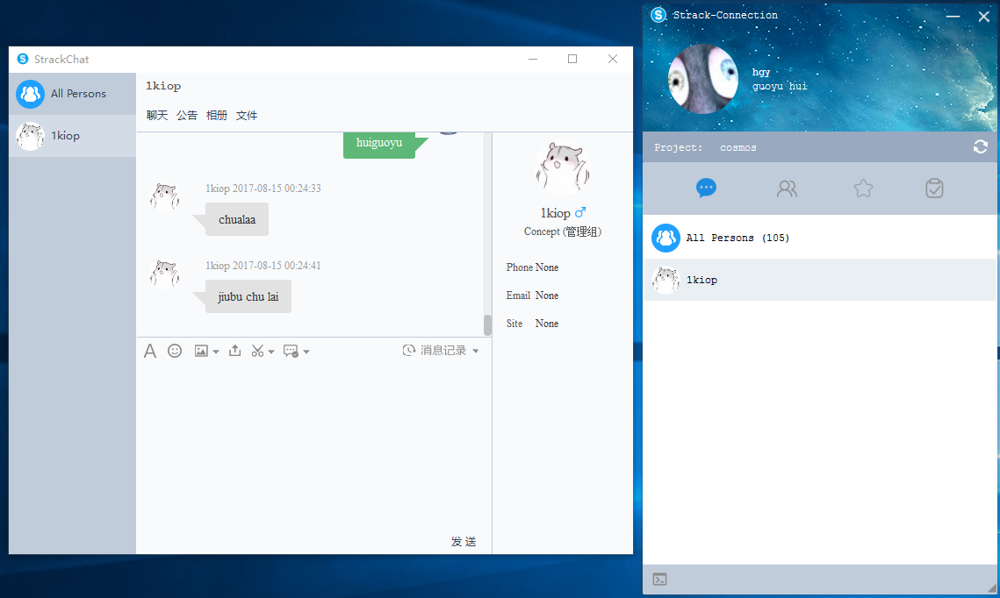
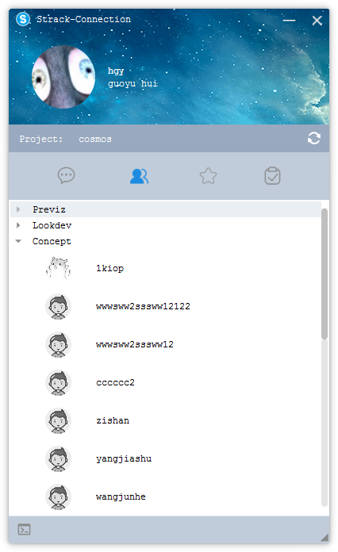
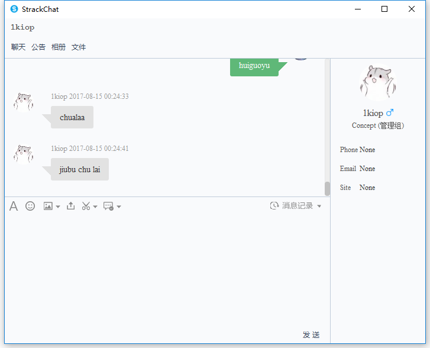
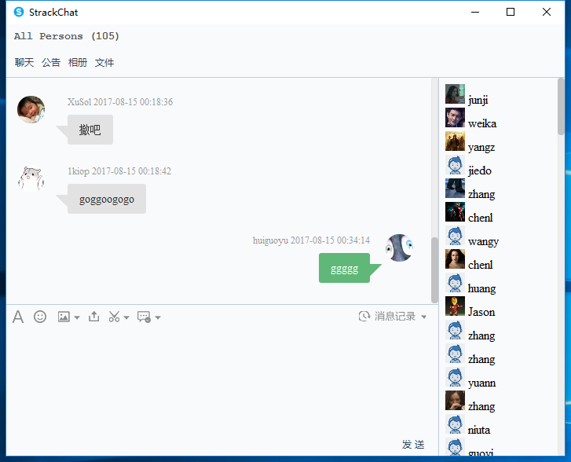
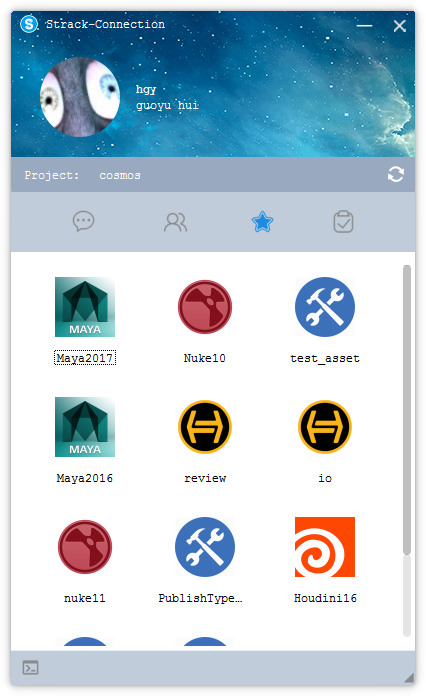
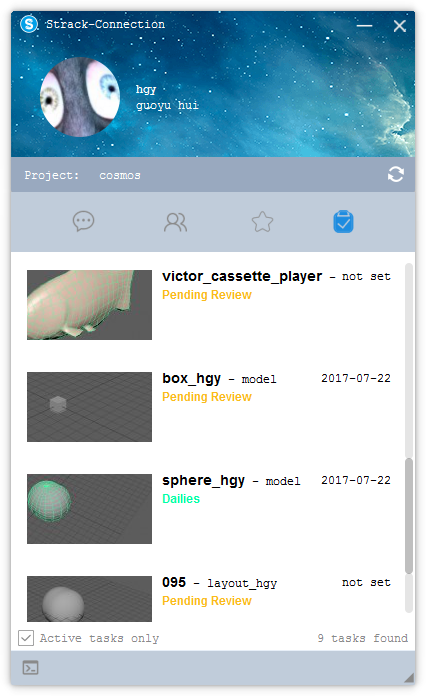
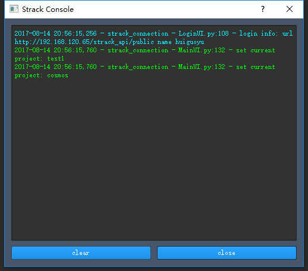

模块介绍
Strack客户端集即时通信和各种交互动作于一体。

布局分布
主界面从上到下分为四部分
■ 个人信息
显示用户头像、用户名和昵称等信息
■ 项目切换
切换当前项目，根据所选项目不同，可以使用的action也不相同。
■ 主体功能
主体功能从左往右一次为会话页面、联系人页面、action页面和task页面。
■ console
点击页面最左下角按钮会弹出console面板，会记录操作信息。
登陆
填入系统API地址、用户名和密码即可登入Strack客户端

会话页面
显示已经存在的会话列表，会按照最近消息的时间进行排序。
双击会弹出聊天对话框。
默认群聊头像


联系人页面
显示Strack系统上记录的人员名单，并按照部门分类。
双击会弹出聊天对话框。

聊天功能
用于对个人或群组的即时通信。
单人聊天

多人聊天

action页面
显示注册在Strack系统上的可以运行的动作。
可以在ActionManager中注册新的动作。

task页面
显示用户在当前项目下尚未完成的任务。包括实体对象、任务名称、截止时间、任务状态等信息。

console
通过终端显示系统的操作情况和报错信息。
